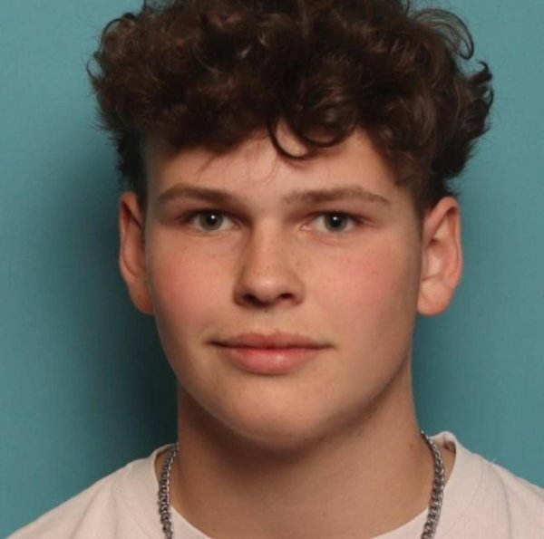

Hoi, ik ben
Quinten.
Ik ben 17 jaar, kom uit Rotterdam en zit in het tweede jaar Software Development op het Grafisch Lyceum. Ik zoek een stageplek waar ik mee kan draaien in een team.

Over mij
Ik leer het meest door dingen te bouwen. Een site die echt werkt, met een database erachter, vind ik veel leuker dan alleen theorie lezen.
Tijdens mijn stage wil ik meedraaien in een echt team, code schrijven die gebruikt wordt en leren van mensen die verder zijn dan ik.
KeepenIk sta op doel en train meerdere keren per week.
FitnessIk sport veel in de gym.
GamenVooral Minecraft en ARK.